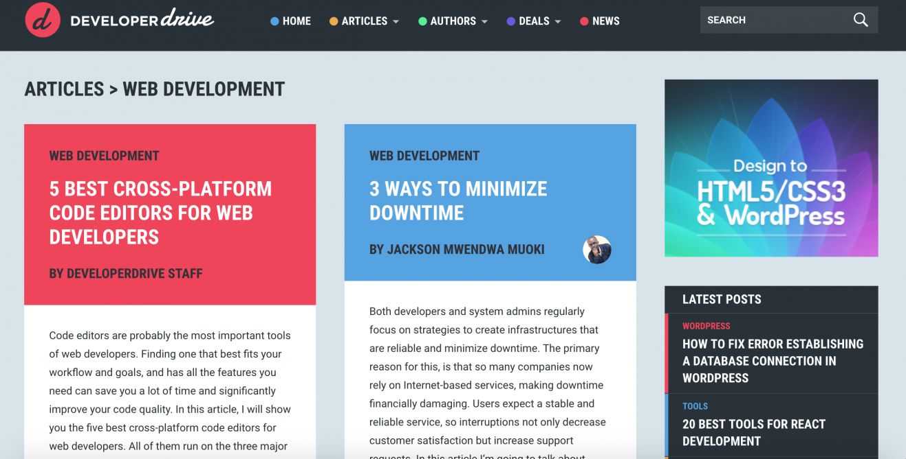

Add Content
If You're a Beginner...

Developer Drive: As mentioned above, this is a perfect option if you’re just beginning your career in web development. By web developers, for web developers, Developer Drive offers the latest news in the world of web development. This includes opinion articles, tutorials, tips & tricks to start off on the right foot. Are you looking to learn how to minimize downtime? How about ensuring your site is secure and easy for consumers to navigate? Or would you like to keep tabs on every Microsoft software release? From JavaScript to mobile development, Developer Drive has you covered.
You can also follow Developer Drive on Twitter for the latest news and articles.